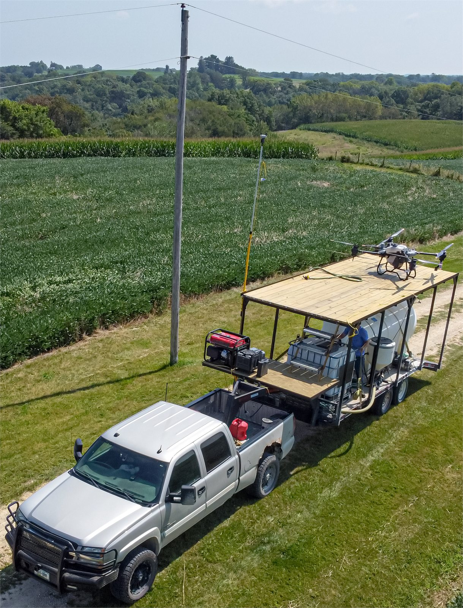
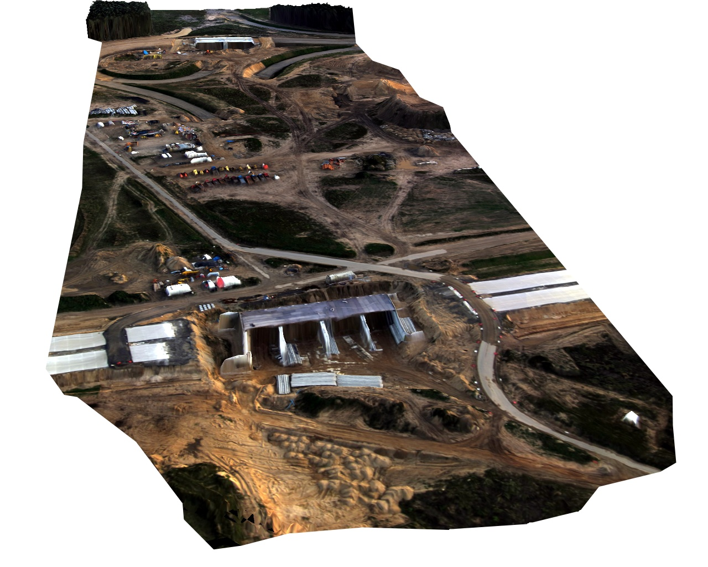
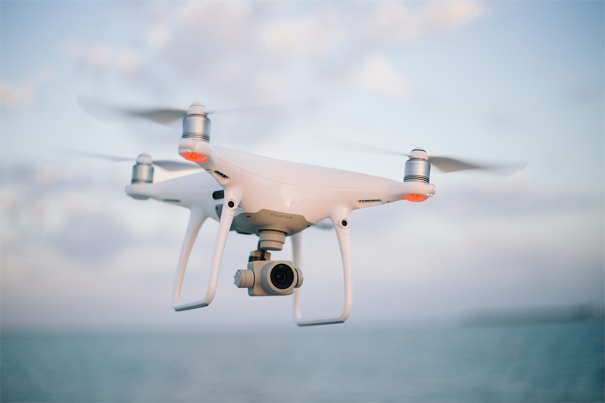
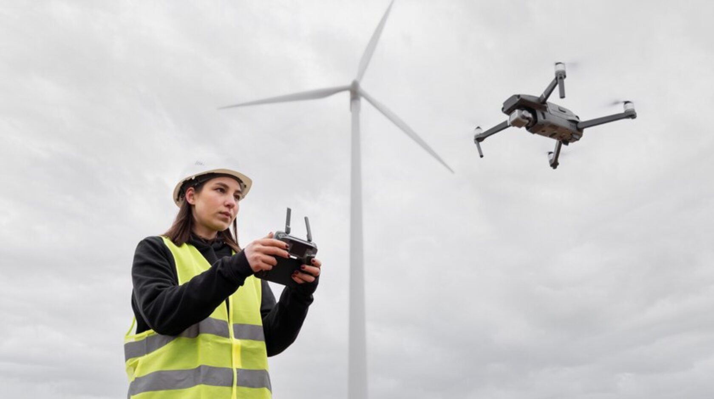
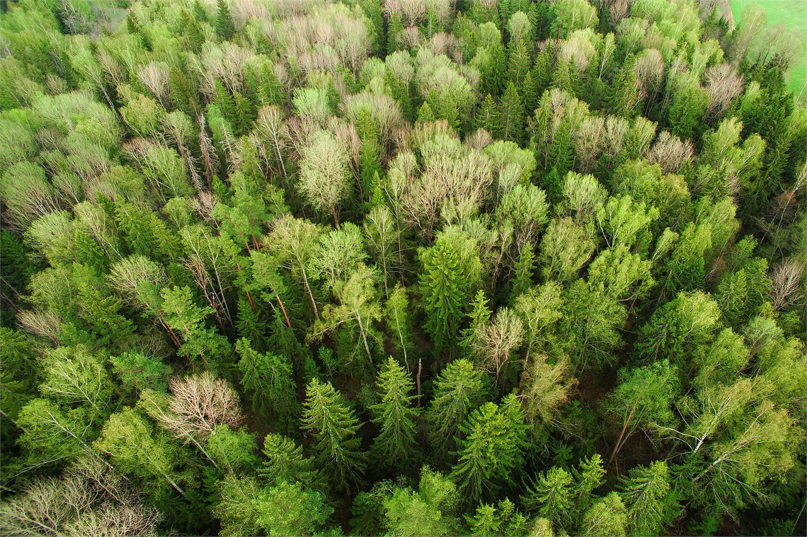
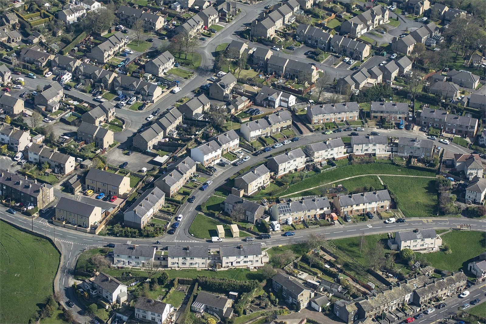
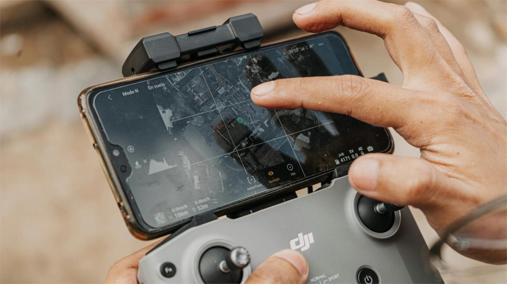
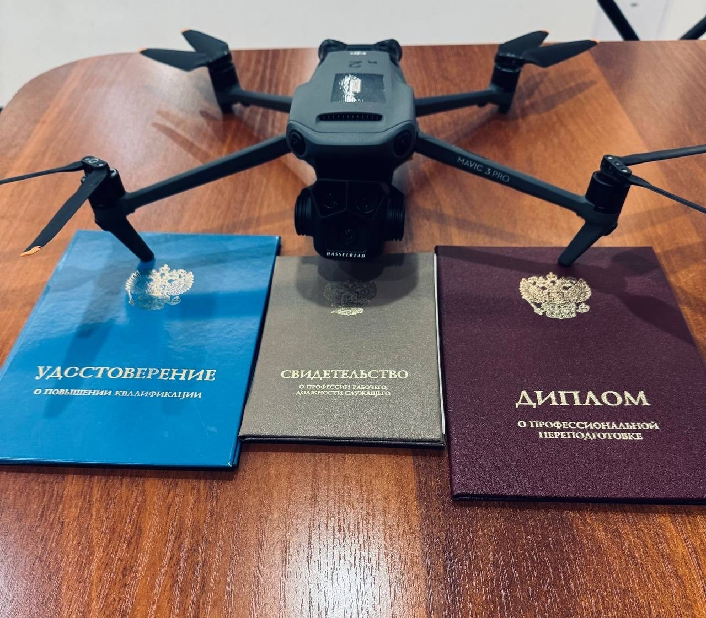

01
Сельское хозяйство
Мониторинг посевов, оценка состояния растений, поиск проблемных участков и обработка полей.
Проекты для агрохолдингов и фермерских хозяйствШкола операторов БПЛА «АэрогениИ»
Обучение операторов БПЛА для сельского хозяйства, строительства, геодезии, съемки и других гражданских отраслей.
Оператор БПЛА превращает полет дрона в понятный результат для бизнеса.
Обучение не для СВО: один навык открывает несколько гражданских рынков и форматов работы.

Мониторинг посевов, оценка состояния растений, поиск проблемных участков и обработка полей.
Проекты для агрохолдингов и фермерских хозяйств
Аэрофотосъемка, ортофотопланы, 3D-модели рельефа, контроль хода работ и объемов.
Работа с подрядчиками и строительными компаниями
Съемка недвижимости, мероприятий, рекламы, туристических объектов и контента для бизнеса.
Фриланс, студия или работа в команде
Контроль ЛЭП, крыш, трубопроводов, промышленных площадок и труднодоступных зон.
Корпоративные задачи и регулярные выезды
Осмотр больших территорий, тепловизионный поиск, наблюдение и помощь оперативным службам.
Специализированные команды и службы
Выездные услуги для компаний: съемка, обследование, карты и отчеты с понятным результатом.
Можно начать с первых заказов без покупки дорогого паркаСтроительная, аграрная, энергетическая или медиакомпания нанимает оператора под постоянные задачи.
Записаться и узнать детали →Собираете портфолио, находите клиентов и продаете конкретный результат: съемку, карту, отчет или обследование.
Записаться на пробное →Помогаете компаниям экономить время и деньги с помощью регулярного мониторинга и данных с воздуха.
Проверить профессию на практике →От первых полетов до прикладных задач: за четыре недели вы освоите базовые навыки оператора БПЛА и разберетесь, как применять их в работе.
Базовые и сложные маневры, работа с камерой, безопасность и подготовка к вылету.
Съемка, осмотр объектов, сбор данных, полеты по заданию и разбор результатов.
Правила эксплуатации БПЛА, ограничения, документы и ответственность оператора.
Разберете направления, подготовите следующий шаг и узнаете, как презентовать свои навыки.
Ищете прикладную специальность, которой можно обучиться с нуля.
Планируете брать проекты по вечерам, в выходные или между основными задачами.
Хотите усилить свои услуги и стать ценнее для работодателя или клиента.
Хотите начать с хобби и постепенно превратить его в профессию.
От инспекции объектов до сбора данных: посмотрите, как оператор БПЛА применяет навык в работе.


Узнайте, как проходят занятия, что ученики осваивают на практике и почему выбирают профессию оператора БПЛА.
Примеры реальных вакансий для операторов БПЛА.
На бесплатном пробном занятии вы сами попробуете управлять дроном под контролем инструктора, увидите формат обучения и поймете, подходит ли вам это направление.
Нет. Программа рассчитана на обучение с нуля: сначала вы осваиваете базовое управление, затем переходите к практическим сценариям.
Школа предоставляет оборудование для занятий. Вы тренируетесь на современных БПЛА под контролем инструктора, поэтому не обязаны покупать дрон до начала обучения.
Документ зависит от выбранной программы и вашего базового образования. Специалист школы уточнит детали на консультации.
Нет. Программа ориентирована на гражданские профессии и не является подготовкой для СВО. После обучения вы сами выбираете свой путь: можете работать в гражданских отраслях или, если захотите, отдельно рассмотреть службу на СВО.
Да. Навык востребован в строительстве, сельском хозяйстве, геодезии, энергетике, медиа и корпоративной инспекции. На консультации разберем подходящие вам сценарии.
Доход зависит от специализации, количества проектов и региона. На рынке есть работа по найму, разовые заказы и собственные услуги. Мы поможем выбрать реалистичную траекторию старта.